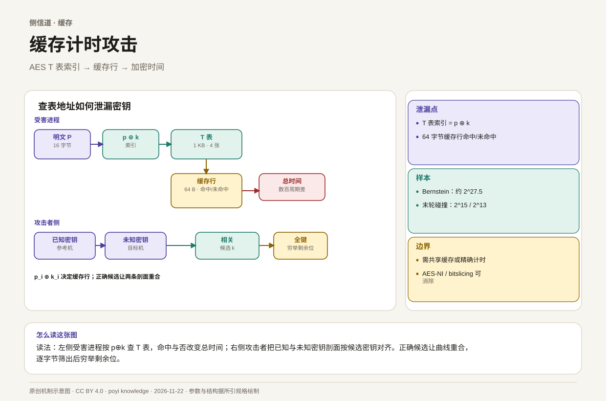
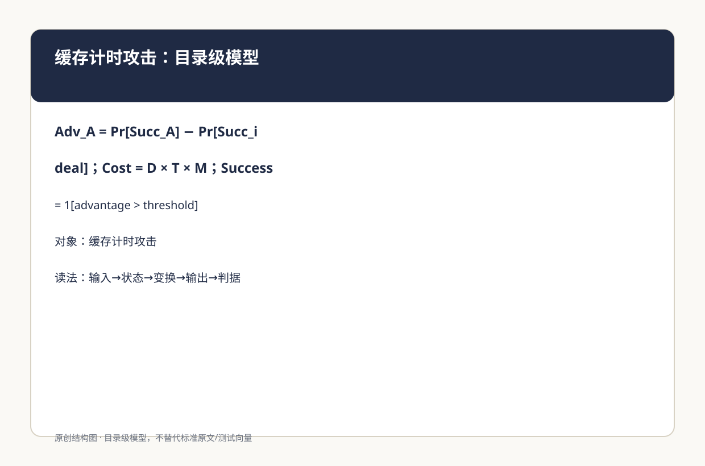

原理与机制
攻击：缓存计时攻击（Cache Timing Attack）。### 查表把密钥带到缓存
AES 软件常用 4 张 T 表做轮变换，每张 256 项、每项 4 字节，共 1 KB。CPU 以 64 字节缓存行取数，一项命中或未命中，整次加密的时间会差出几百个周期。第一轮查表索引是 p_i ⊕ k_i，攻击者改变明文 p，就能观察“哪个索引被缓存”。### 从时间到密钥
攻击者先在相同机器上用已知密钥建立“明文字节—时间”剖面，再对未知密钥重复采样，把两条剖面按候选密钥做相关。正确候选会让两次剖面的缓存模式对齐，错误候选对不齐；逐字节筛出候选后再用已知明文-密文对穷举剩余位。

为什么重要
AES 的快速软件实现依赖 S-box/T-table 查表，而查表地址由密钥与明文共同决定。要快要安全，就得让访存时间与地址无关；在通用 CPU 上这很难，常数时间实现往往显著变慢。只要目标与攻击者共享缓存，或攻击者能精确测量加密时间，泄漏就存在。### 远程也能测
Bernstein 2005 年的实验从另一台机器经网络向 OpenSSL 服务器发请求，仅凭响应时间恢复完整 AES 密钥。网络抖动会稀释信号，但大量样本仍能把统计差异拉出来；这也是“远程计时攻击”一词的来源。
应用与实例
缓存攻击可用于跨进程、跨虚拟机、云共置、浏览器计时和嵌入式设备。它不要求读取受害者的内存，只要求共享缓存层级和足够精细的计时源；Flush+Reload 等变体进一步降低了噪声。### 防御
首选 AES-NI 等常数时间硬件指令；软件可用 bitslicing、布尔 S-box 或避免秘密索引的实现。系统层可做缓存着色、核心隔离、随机化计时源和噪声注入。防守方要同时考虑性能，不能只把表查改成慢速逐位运算。

边界与攻击面
Bernstein 的原始攻击约需 2^27.5 个明文/计时样本，并要求参考机与目标机的软件、CPU、后台负载足够接近。Bonneau–Mironov 2006 把攻击移到末轮，用约 2^15 个样本恢复全键，扩展末轮约 2^13；样本少了，但仍需精确计时和同构环境。### 不是所有 AES 都怕
AES-NI、常数时间 bitsliced 实现、无秘密索引的硬件协处理器不会给出这类缓存信号。攻击主要打击“快速 T-table 软件 AES”，尤其是老旧 OpenSSL、跨进程共享缓存和云多租户环境。
历史与背景
Daniel J.Bernstein 在 2005 年发表《Cache-timing attacks on AES》，用 OpenSSL 0.9.7a 与 Pentium III 从网络服务器恢复完整 128 位 AES 密钥，并留下可复现代码。这是缓存计时攻击的标志性工作。### 2006 之后
Osvik–Shamir–Tromer 在 2006 年提出 Prime+Probe 与缓存碰撞，Bonneau–Mironov 用末轮碰撞把样本降到 2^15/2^13；2014 年 Yarom–Falkner 的 Flush+Reload 把分辨率推到缓存行级。之后 Meltdown/Spectre 让缓存侧信道成为通用 CPU 安全的核心议题。
技术参数与复算边界
该条目的形式模型是 (\mathrm{Adv}^{\mathrm{attack}}_A(\lambda)=\Pr[\mathrm{Game}_A(\lambda)=1]-\frac12)。输入：输入：缓存计时攻击的公开参数、密钥/随机数与消息；变量说明：λ 安全参数；Game 把攻击目标写成挑战-响应游戏。 预期输出：按 缓存计时攻击 的规范执行后得到可验证的输出或可比较的优势界。 复算必须给出输入、步骤、输出和单位；示例只演示流程，不替代标准测试向量。
复杂度由密钥长度、分组/状态规模、轮数、随机数质量和敌手模型共同决定；参数越界、版本差异与实现侧信道都可能使公式结论失效。已登记限制：该条目只给出形式模型与可复算步骤，不声称已完成生产实现、侧信道认证或第三方安全评估。
逐步示例与核验
形式模型与复算步骤
[\mathrm{Adv}^{\mathrm{attack}}_A(\lambda)=\Pr[\mathrm{Game}_A(\lambda)=1]-\frac12]
缓存计时攻击的公开参数、密钥/随机数与消息；变量说明：λ 安全参数；Game 把攻击目标写成挑战-响应游戏。1.定义挑战与获胜条件。2.给攻击者 oracle 访问。3.计算优势并与目标界比较。边界：公式只覆盖已登记的参数与假设；参数取值、标准版本和实现细节仍以来源为准。
参考出处
- Wikipedia search entry for 缓存计时攻击. https://zh.wikipedia.org/w/index.php?search=%E7%BC%93%E5%AD%98%E8%AE%A1%E6%97%B6%E6%94%BB%E5%87%BB
- Handbook of Applied Cryptography (Menezes, van Oorschot, Vanstone). https://www.cacr.math.uwaterloo.ca/hac/